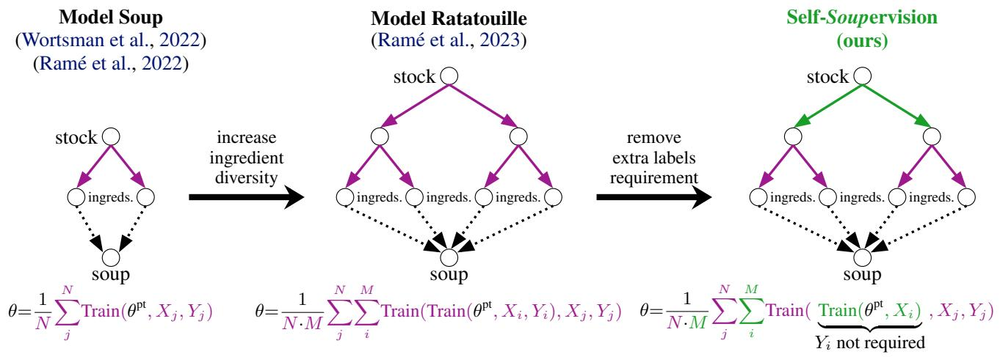

Figureure 2 · Souping across different SSL algorithmsFigure 2. Souping across different SSL algorithms. We explore mixtures of 3 ingredient models that we inter-train with different selfsupervised losses: MAE, MoCoV3, and MMCR. MAE is a pixel-reconstruction algorithm, MoCoV3 is an instance-contrastive algorithm, and MMCR is a dimension-contrastive algorithm. Through this experiment, we are the first to show that linear-mode connectivity can ingredients alone (no mix), and the inner triangles represent mixtures of the 3 ingredients. Each central inner triangle is a hold between ingredients that differ in their self-supervised training runs. The circles located at the corners of the 8 triangles represent the $\textstyle { \left( { \frac { 1 } { 3 } } , { \frac { 1 } { 3 } } , { \frac { 1 } { 3 } } \right) }$ mix, and the other inner triangles are unequal mixes (where mixture coefficients are proportional to the proximity to the corner ingredients).这张图来自论文 PDF 的结构化抽取。当前用于辅助理解 Self-Soupervision 的方法或实验，请结合正文精读段落一起看。

Figureure 1 · Soups & SupervisionFigure 1. Soups & Supervision. Soups fine-tune then mix models to improve predictions. The original Model Soup (left) fine-tunes across hyperparameters for the task, while Model Ratatouilles (center) first inter-trains on different labeled data then fine-tunes for the task. Both are supervised and cannot harness unlabeled data. Our Self-Soupervision (right) inter-trains across different losses and data to make more and better soups with and without labels. Our Self-Soups fine-tune then mix into a supervised model for the task. $\theta ^ { \mathrm { { p t } } }$ is the pre-trained stock for initialization, N is the number of fine-tunings on data j, M is the number of inter-trainings on data i, and θ is the final model. We color supervised and self-supervised training runs / components. “ingreds.” is short for model-soup ingredients.这张图来自论文 PDF 的结构化抽取。当前用于辅助理解 Self-Soupervision 的方法或实验，请结合正文精读段落一起看。
核心问题
它和通用视觉自监督的关系在于：无标签 model soup 是低成本提升 SSL 模型鲁棒性和迁移性的工程路线。
方法拆解
把 model soup 推广到无标签 SSL：在未标注新数据、shift 数据或不同 SSL 超参/算法上产生多个 ingredient，再平均回统一模型。